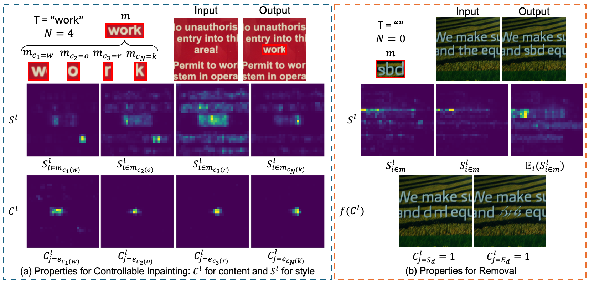
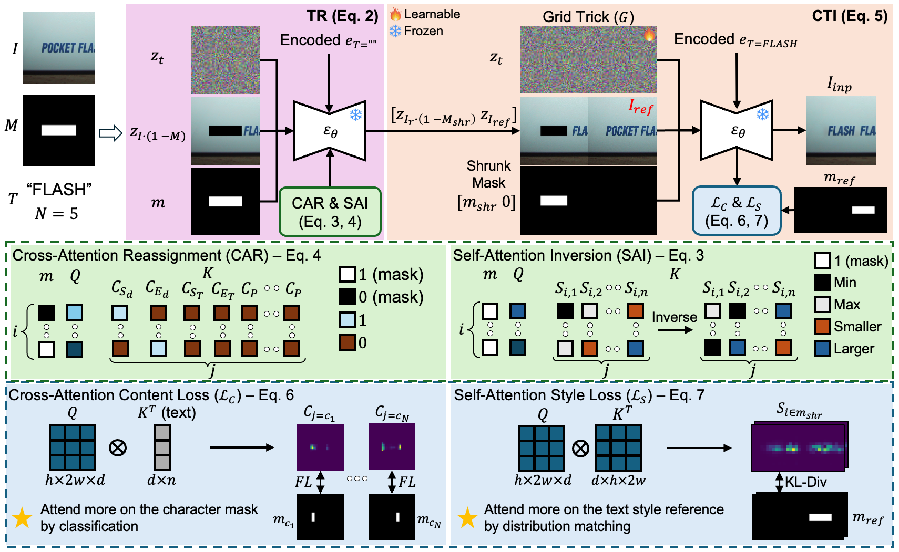
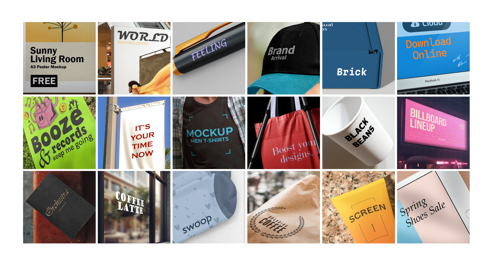
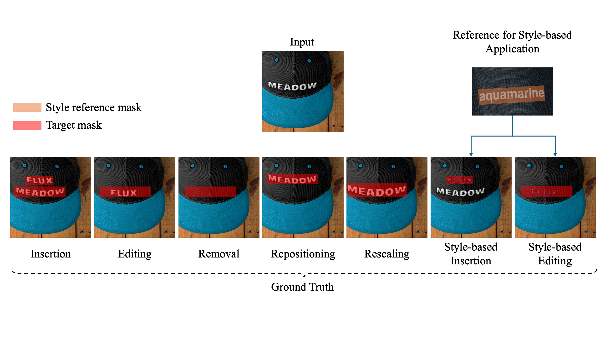
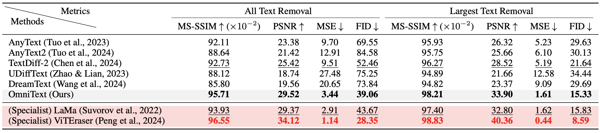
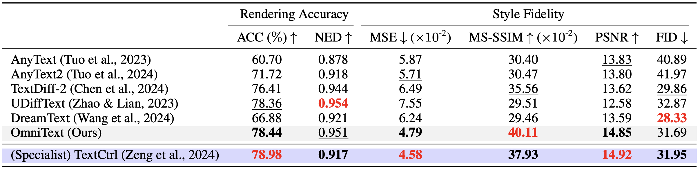
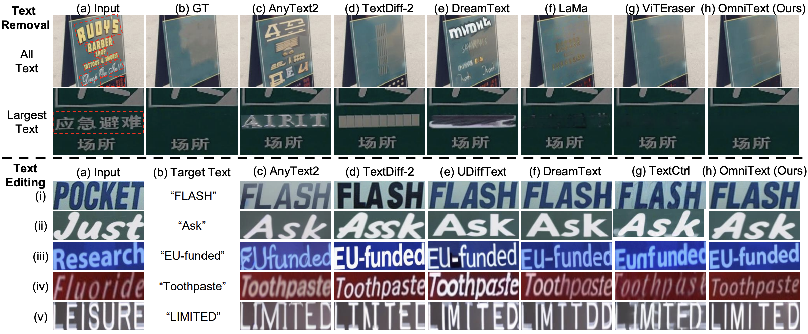
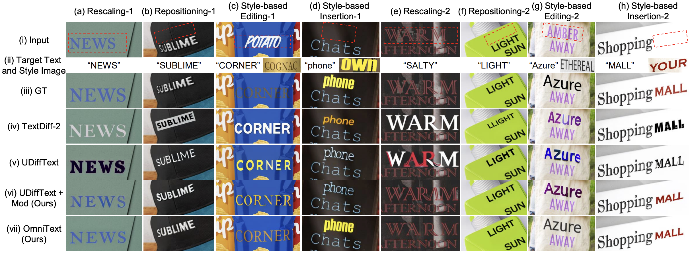

Key Ideas
1) Observations of Text Generation Model

- During text generation: Self-attention influences style and cross-attention controls content alignment
- During text removal: Strong self-attention responses to surrounding text in early sampling cause text-like hallucinations, and redistributing cross-attention helps to reduce hallucination
2) OmniText Framework

- Text Removal: Self-attention inversion and cross-attention reassignment to suppress the backbone's text generation ability
- Controllable Inpainting: A latent optimization framework guided by cross-attention content loss to control content and self-attention style loss to control style
Benchmark Dataset: OmniText-Bench
Download

A mockup-based evaluation dataset consisting of 150 sets of
input images, target texts with masks, reference images, and
ground-truth, covering five distinct applications
Results
Quantitative
Text removal (SCUT-EnsText) and text editing (ScenePair)
benchmarks


Qualitative
Standard application (removal and editing) and additional
applications (rescaling, repositioning, and style-based
insertion and editing)

